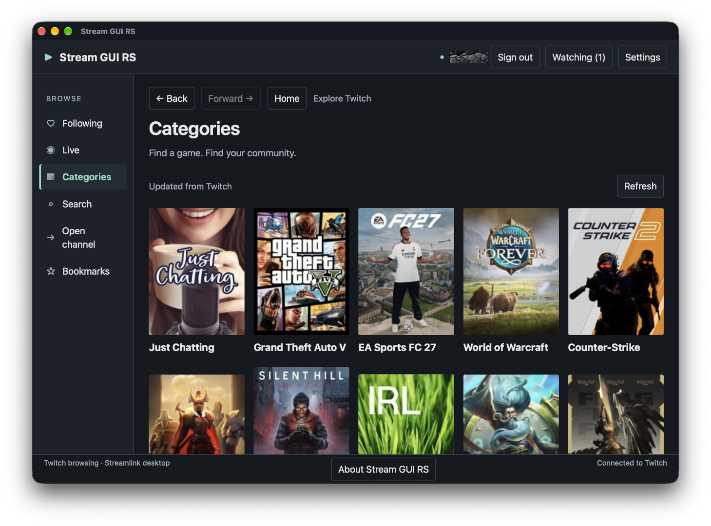

Fast Twitch discovery
Browse followed channels, live streams and categories. Search, open exact channel names, visit teams, and keep local bookmarks without turning the interface into a website clone.
Native Twitch browsing
A focused desktop app for finding Twitch streams, then handing playback to Streamlink and the player you already trust.

A cleaner route to the stream
Built for the desktop
Stream GUI RS keeps Twitch discovery compact and gives native process control to the backend—while video stays in a dedicated media player.
Browse followed channels, live streams and categories. Search, open exact channel names, visit teams, and keep local bookmarks without turning the interface into a website clone.
Use Streamlink’s default, mpv, VLC or a custom executable, with reusable player profiles.
Twitch tokens remain in Rust and the operating system’s secure store—not in the web interface, logs, settings or player arguments.
Run multiple streams, then stop or restart them individually. Optional tray controls and followed-live notifications keep the app useful in the background.
System, light and dark color modes, Default and eight bundled themes, custom palettes, three text sizes, and English, German, Spanish and French interfaces.
Free and open source
Download the package for your desktop, install Streamlink 8.0 or newer, and choose a supported media player. Stream GUI RS does not bundle either dependency.
Open downloads Read the install guideOpen by design
Stream GUI RS is licensed under GPL-3.0-only and built in public with Rust, Tauri, React and TypeScript. It is an independent project and is not affiliated with Twitch or Streamlink.